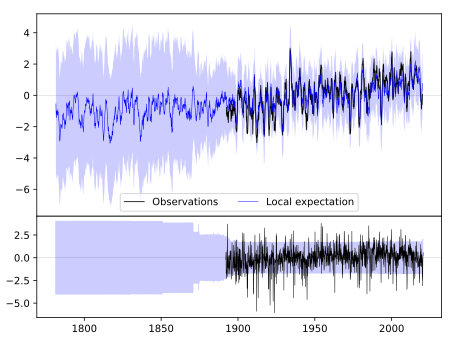
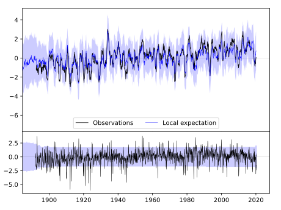
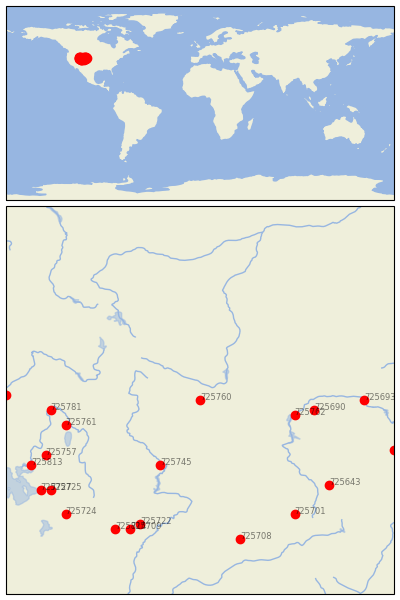

LANDER [USA]


| Neighbour | Name | Country | Distance | Lon/Lat | Years |
|---|
| 725760 | LANDER | USA | 0 | -108.7, 42.8 | 1892-2020 |
| 725745 | GREEN RIVER | USA | 158 | -109.5, 41.5 | 1895-2019 |
| 725762 | PATHFINDER DAM | USA | 158 | -106.8, 42.5 | 1900-1990 |
| 725690 | BATES CREEK #2 | USA | 189 | -106.4, 42.6 | 1893-2020 |
| 725761 | BERN | USA | 228 | -111.4, 42.3 | 1893-2019 |
| 725781 | GRACE | USA | 246 | -111.7, 42.6 | 1893-2019 |
| 725693 | DOUGLAS | USA | 269 | -105.4, 42.8 | 1909-1970 |
| 725757 | LOGAN UTAH ST UNIV | USA | 282 | -111.8, 41.7 | 1891-2019 |
| 725643 | FOXPARK | USA | 286 | -106.1, 41.1 | 1909-1970 |
| 725722 | FT DUCHESNE | USA | 295 | -109.9, 40.3 | 1889-2019 |
| 725701 | STEAMBOAT SPRINGS | USA | 300 | -106.8, 40.5 | 1891-2019 |
| 725709 | MYTON | USA | 311 | -110.1, 40.2 | 1932-1980 |
| 725813 | CORINNE | USA | 315 | -112.1, 41.5 | 1893-2019 |
| 725780 | POCATELLO/MUNI | USA | 318 | -112.6, 42.9 | 1938-2020 |
| 725708 | MEEKER | USA | 318 | -107.9, 40.0 | 1891-1980 |
| 725725 | MORGAN POWER & LIGHT | USA | 318 | -111.7, 41.0 | 1893-2019 |
| 725814 | DUCHESNE | USA | 321 | -110.4, 40.2 | 1893-2019 |
| 725727 | FARMINGTON 3 NW | USA | 331 | -111.9, 41.0 | 1893-2019 |
| 725644 | CHUGWATER | USA | 339 | -104.8, 41.8 | 1893-2019 |
| 725724 | HEBER | USA | 340 | -111.4, 40.5 | 1893-2019 |